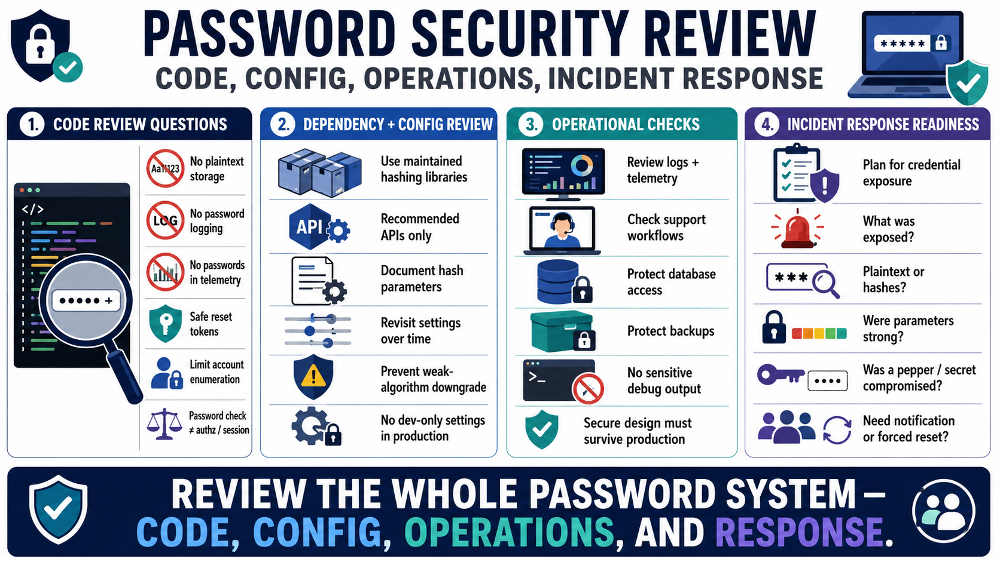

Testing, Review, and Operations
Connecting to LMS... Progress: in progress

Narration
Code review should ask direct questions about passwords. Are plaintext passwords ever stored, logged, returned, compared unsafely, or copied into telemetry. Are password fields excluded from debug output and structured logs. Are reset tokens generated with suitable randomness and expiration. Are authentication errors designed to limit account enumeration. Are authorization and session decisions separate from password verification.
Dependency and configuration review are just as important as code review. Teams should verify that password hashing libraries are maintained, configured with appropriate parameters, and used through their recommended APIs. Hash parameter choices should be documented and revisited periodically. Configuration should prevent accidental downgrade to weak algorithms or development-only settings in production.
Operational checks should include logs, telemetry, support workflows, database access, backup handling, and incident response runbooks. It is not enough for the login function to be correct if another job exports credential fields, a support screen displays sensitive data, or a debug logger captures passwords during failed authentication. Operations determine whether secure design survives contact with production.
Incident response for credential exposure should be planned before it is needed. Teams may need to assess which credentials were exposed, whether plaintext passwords or only hashes were involved, whether hash parameters were strong, whether a pepper or secret manager was compromised, whether users require notification, and whether forced reset is appropriate. Preparedness reduces confusion when speed and accuracy matter.